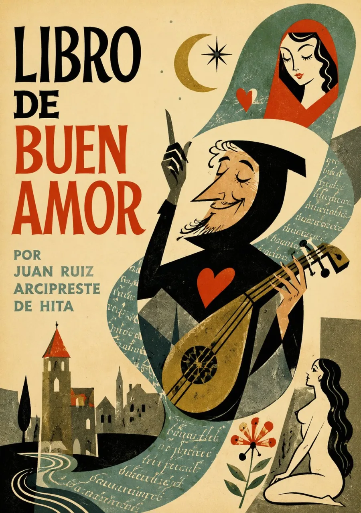

Escucha ahora
SINOPSIS
Obra inclasificable del siglo XIV en la que Juan Ruiz, Arcipreste de Hita, mezcla autobiografía, fábulas, exempla morales y episodios amorosos cómicos, narrados por un yo poético cuyas aventuras oscilan entre el "loco amor" y el "buen amor". Trotaconventos, la alcahueta que guía al narrador, se convertiría en antecedente directo de la picaresca española.
CAPÍTULOS
El yo poético y las primeras aventuras
Las fábulas y los exempla morales
Trotaconventos, la alcahueta
Entre el loco amor y el buen amor
El elogio del amor y las cánticas
RESEÑAS

Bueno